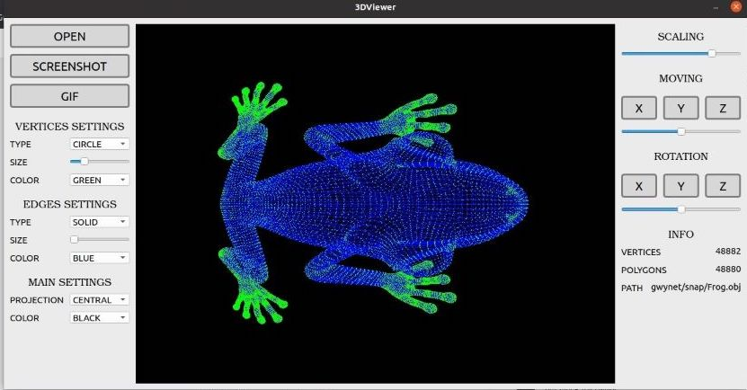
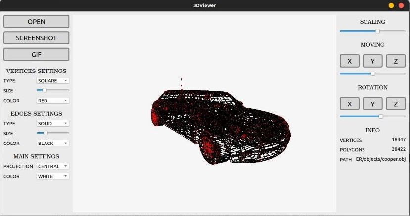

Documentation 3DViwer_v1.0

Settings
- Selecting colors for faces
- Selecting colors for vertices
- Selecting Size for faces
- Selecting Size for vertices
- Selecting type of projection: parallel or central
- Parallel - In this type of projection, it doesn't matter how far away the object is. It will always be the same size in the final image
- Central - Objects farther away from us appear smaller
- Selecting background color
